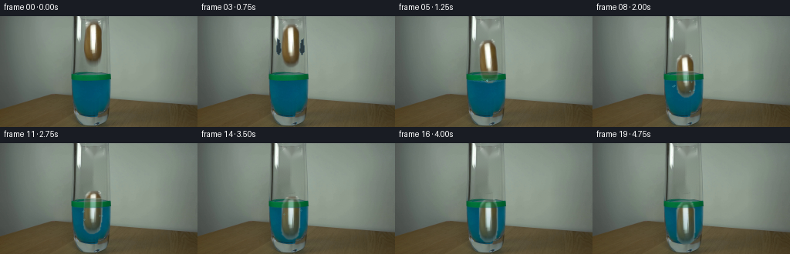
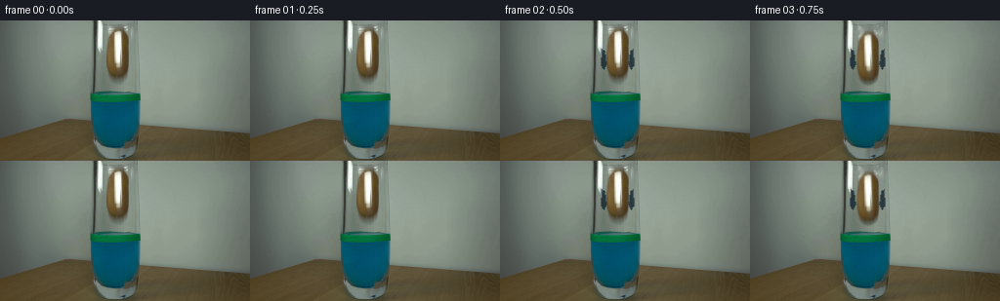

CODING AGENTS AS PIXEL WORLD MODELS
traex/DeepSeek-V4.1-Flash · 0144
点击播放 · 原生 RGB 像素
此结果可播放，但该运行尚未通过最终提交审核。页面展示不代表评测通过。
逐轮保存的候选
回放视频、检查图与代码变化。
每份候选均可单独播放。实际图片检查记录在下方工具轨迹中。
候选 01播放与检查图
点击播放 · 原生 RGB 像素


展开代码变化
--- 上一保存版本
+++ 本次保存版本
@@ -0,0 +1,281 @@
+from pathlib import Path
+
+import cv2
+import numpy as np
+from PIL import Image
+
+import artifact_io
+
+
+ROOT = Path(__file__).resolve().parent
+W, H = 256, 144
+N_FRAMES = 20
+
+
+def make_potato_mask():
+ """Rounded, asymmetric silhouette of the upright potato."""
+ mask = np.zeros((H, W), np.float32)
+ rows = np.array([7, 9, 12, 16, 21, 28, 38, 47, 53, 57, 60, 62], np.float32)
+ left = np.array([117, 114, 111, 110, 109, 109, 109, 109, 110, 111, 114, 117], np.float32)
+ right = np.array([128, 130, 131, 132, 132, 132, 132, 132, 131, 130, 127, 123], np.float32)
+ yy = np.arange(H, dtype=np.float32)
+ lo = np.interp(yy, rows, left).astype(np.int32)
+ hi = np.interp(yy, rows, right).astype(np.int32)
+ for y in range(7, 63):
+ mask[y, lo[y] : hi[y] + 1] = 1.0
+ mask = cv2.GaussianBlur(mask, (3, 3), 0.55)
+ mask[mask < 0.08] = 0.0
+ return np.clip(mask, 0.0, 1.0)
+
+
+def make_clean_plate(frame, alpha):
+ hard = (alpha > 0.05).astype(np.uint8) * 255
+ hard = cv2.dilate(hard, np.ones((3, 3), np.uint8), iterations=1)
+ clean = cv2.inpaint(
+ np.round(frame).astype(np.uint8), hard, 3, cv2.INPAINT_TELEA
+ ).astype(np.float32)
+
+ # Keep the fill local to the hidden potato area and preserve its soft edge.
+ blend = cv2.GaussianBlur((hard > 0).astype(np.float32), (5, 5), 1.1)
+ blend = np.clip(blend * 1.7, 0.0, 1.0)[..., None]
+ return frame * (1.0 - blend) + clean * blend
+
+
+def place_sprite(frame, color, alpha, center, angle):
+ src_c = np.array([120.3, 34.5], np.float32)
+ dst_c = np.asarray(center, np.float32)
+ rot = cv2.getRotationMatrix2D(tuple(src_c), angle, 1.0)
+ rot[:, 2] += dst_c - src_c
+
+ warped_rgb = cv2.warpAffine(
+ color, rot, (W, H), flags=cv2.INTER_LINEAR, borderMode=cv2.BORDER_CONSTANT
+ )
+ warped_a = cv2.warpAffine(
+ alpha, rot, (W, H), flags=cv2.INTER_LINEAR, borderMode=cv2.BORDER_CONSTANT
+ )
+ warped_a = np.clip(warped_a, 0.0, 1.0)
+ a = warped_a[..., None]
+ return frame * (1.0 - a) + warped_rgb * a, warped_a
+
+
+def blend_rgb(frame, color, alpha):
+ a = np.asarray(alpha, np.float32)
+ if a.ndim == 2:
+ a = a[..., None]
+ return frame * (1.0 - a) + np.asarray(color, np.float32) * a
+
+
+def tint_submerged(frame, potato_alpha, liquid_mask):
+ yy = np.arange(H, dtype=np.float32)[:, None]
+ depth = np.clip((yy - 83.0) / 43.0, 0.0, 1.0)
+ strength = (0.12 + 0.23 * depth) * potato_alpha * liquid_mask
+ return blend_rgb(frame, (0, 83, 111), strength[..., None])
+
+
+def add_ripples(frame, age):
+ if age < 0:
+ return frame
+
+ # Fine surface deformation following the impact.
+ overlay = frame.copy()
+ phase = age * 0.78
+ fade = np.exp(-age / 6.5)
+ for x in range(95, 142):
+ dx = x - 119.0
+ y = 83.0 + 0.8 * np.sin(0.38 * dx - phase) * np.exp(-abs(dx) / 23.0)
+ yi = int(round(y))
+ if 0 <= yi < H:
+ overlay[yi, x] = (96, 157, 164)
+ if 84 < H:
+ overlay[min(84, H - 1), x] = (13, 103, 126)
+ frame = blend_rgb(frame, overlay, 0.23 * fade)
+
+ # Expanding elliptical wavefronts.
+ for k in range(3):
+ radius = 8.0 + 8.2 * age + 5.0 * k
+ if radius > 31:
+ continue
+ wave = frame.copy()
+ cv2.ellipse(
+ wave,
+ (119, 83),
+ (int(radius), max(1, int(1.0 + 0.11 * radius))),
+ 0,
+ 0,
+ 360,
+ (116, 185, 190),
+ 1,
+ cv2.LINE_AA,
+ )
+ frame = blend_rgb(frame, wave, 0.20 * fade / (1.0 + 0.25 * k))
+
+ # A few compact droplets thrown clear of the surface.
+ if age <= 6:
+ for j, (vx, vy, delay) in enumerate(
+ [
+ (-17, -31, 0),
+ (-11, -38, 1),
+ (-5, -43, 0),
+ (7, -42, 0),
+ (14, -35, 1),
+ (20, -27, 0),
+ (-23, -21, 1),
+ ]
+ ):
+ t = max(0, age - delay)
+ x = 119.0 + vx * t
+ y = 83.0 + vy * t + 4.3 * t * t
+ if 90 < x < 146 and 65 < y < 85:
+ droplet = frame.copy()
+ radius = 1 if t < 2 else 0
+ cv2.circle(
+ droplet,
+ (int(round(x)), int(round(y))),
+ radius,
+ (142, 203, 208),
+ -1,
+ cv2.LINE_AA,
+ )
+ frame = blend_rgb(frame, droplet, 0.65 * fade)
+ return frame
+
+
+def add_glass_foreground(frame, source, band_alpha):
+ # The green marking is on the front wall, so it remains visible as the
+ # potato passes behind it. Only this narrow band is re-composited.
+ band = np.zeros((H, W), np.float32)
+ band[71:84, 91:145] = 1.0
+ band = cv2.GaussianBlur(band, (3, 3), 0.55)
+ band *= band_alpha
+ return frame * (1.0 - band[..., None]) + source * band[..., None]
+
+
+def add_bubbles(frame, age, center_y):
+ if age < 0:
+ return frame
+ for j in range(7):
+ birth = j * 0.55
+ life = age - birth
+ if life < 0 or life > 7:
+ continue
+ side = -1 if j % 2 == 0 else 1
+ x0 = 119 + side * (9 + (j % 3) * 2)
+ y0 = center_y + 17 + (j % 4) * 3
+ x = x0 + 1.7 * np.sin(1.4 * life + j)
+ y = y0 - 4.8 * life
+ if y < 85 or y > 130:
+ continue
+ b = frame.copy()
+ cv2.circle(
+ b,
+ (int(round(x)), int(round(y))),
+ 1,
+ (94, 175, 184),
+ -1,
+ cv2.LINE_AA,
+ )
+ frame = blend_rgb(frame, b, 0.42 * np.exp(-life / 8.0))
+ return frame
+
+
+def add_open_jaw(frame, amount):
+ if amount <= 0:
+ return frame
+
+ # A restrained blue-black jaw silhouette, introduced only after release.
+ left = np.array(
+ [[106, 29], [109, 31], [111, 45], [108, 50], [105, 46]], np.int32
+ )
+ right = np.array(
+ [[134, 29], [131, 31], [129, 45], [132, 50], [135, 46]], np.int32
+ )
+ left[:, 0] -= int(round(amount))
+ right[:, 0] += int(round(amount))
+ overlay = frame.copy()
+ cv2.fillPoly(overlay, [left], (18, 33, 42), cv2.LINE_AA)
+ cv2.fillPoly(overlay, [right], (18, 33, 42), cv2.LINE_AA)
+ cv2.polylines(overlay, [left], True, (55, 77, 86), 1, cv2.LINE_AA)
+ cv2.polylines(overlay, [right], True, (55, 77, 86), 1, cv2.LINE_AA)
+ return blend_rgb(frame, overlay, 0.78)
+
+
+def generate():
+ first = np.asarray(Image.open(ROOT / "first_frame.png").convert("RGB"), np.float32)
+ potato_alpha = make_potato_mask()
+ clean = make_clean_plate(first, potato_alpha)
+ potato_color = first.copy()
+
+ positions = [
+ 34.5,
+ 34.5,
+ 34.5,
+ 38.0,
+ 47.0,
+ 58.5,
+ 65.5,
+ 71.5,
+ 77.0,
+ 82.0,
+ 86.0,
+ 89.3,
+ 92.1,
+ 94.5,
+ 96.7,
+ 98.7,
+ 100.3,
+ 101.7,
+ 102.8,
+ 103.4,
+ ]
+ rotations = [0, 0, 0, 1.0, 3.0, 5.0, 5.8, 4.8, 2.9, 0.8, -0.9, -1.8,
+ -2.0, -1.6, -1.0, -0.4, 0.1, 0.5, 0.7, 0.8]
+ drift = [0, 0, 0, 0.2, -0.4, 0.5, 0.8, 0.4, -0.2, -0.5, -0.6,
+ -0.5, -0.3, -0.1, 0.1, 0.2, 0.2, 0.1, 0.0, 0.0]
+
+ liquid_mask = np.zeros((H, W), np.float32)
+ liquid_mask[83:131, 94:143] = 1.0
+ liquid_mask = cv2.GaussianBlur(liquid_mask, (5, 5), 1.4)
+
+ frames = np.empty((N_FRAMES, H, W, 3), np.uint8)
+ for i in range(N_FRAMES):
+ if i == 0:
+ frames[i] = first.astype(np.uint8)
+ continue
+
+ if i <= 2:
+ frame = first.copy()
+ else:
+ frame = clean.copy()
+ frame, moved_alpha = place_sprite(
+ frame,
+ potato_color,
+ potato_alpha,
+ (120.3 + drift[i], positions[i]),
+ rotations[i],
+ )
+ frame = tint_submerged(frame, moved_alpha, liquid_mask)
+
+ impact_age = i - 5
+ if impact_age >= 0:
+ frame = add_bubbles(frame, impact_age, positions[i])
+ frame = add_ripples(frame, impact_age)
+ frame = add_glass_foreground(frame, first, 0.55)
+
+ if 1 <= i <= 4:
+ frame = add_open_jaw(frame, min(7.0, 1.5 * (i - 1)))
+
+ # Very light temporal grain prevents flat areas from looking like a
+ # frozen still while leaving the untouched first frame exact.
+ rng = np.random.default_rng(1440 + i)
+ noise = rng.normal(0.0, 0.32, (H, W, 1)).astype(np.float32)
+ frame = np.clip(frame + noise, 0.0, 255.0)
+ frames[i] = np.round(frame).astype(np.uint8)
+
+ assert np.array_equal(frames[0], first.astype(np.uint8))
+ return frames
+
+
+if __name__ == "__main__":
+ video = generate()
+ artifact_io.save(video, ROOT)
+ print(f"wrote {video.shape} RGB frames to {ROOT}")
可观测工具轨迹
实际执行的命令与返回图片。
命令 1exit 0
/bin/bash -c "pwd && rg --files -g '"'!*.mp4'"' -g '"'!*.avi'"' -g '"'!*.mov'"'"
命令 2exit 0
/bin/bash -c "sed -n '1,240p' GENERATION_RULES.md"
命令 3exit 0
/bin/bash -c "sed -n '1,240p' prompt.txt"
命令 4exit 0
/bin/bash -c "ls -lah && file first_frame.png 2>/dev/null || true && python - <<'PY'
from PIL import Image
import os
p='first_frame.png'
if os.path.exists(p):
im=Image.open(p)
print(im.mode, im.size, im.getextrema())
PY"命令 5exit 0
/bin/bash -c "sed -n '1,260p' artifact_io.py"
命令 6exit 0
/bin/bash -c "sed -n '1,260p' player_template.html"
命令 7exit 0
/bin/bash -c "python - <<'PY'
from PIL import Image
import numpy as np
from collections import Counter
im=np.array(Image.open('first_frame.png').convert('RGB'))
print('shape',im.shape)
q=(im//16)*16
c=Counter(map(tuple,q.reshape(-1,3)))
print('top quantized colors')
for col,n in c.most_common(30): print(col,n, f'{n/im.shape[0]/im.shape[1]*100:.1f}%')
# exact top colors
c2=Counter(map(tuple,im.reshape(-1,3)))
print('exact top')
for col,n in c2.most_common(20): print(col,n)
PY"命令 8exit 0
/bin/bash -c "python - <<'PY'
from PIL import Image
import numpy as np
from sklearn.cluster import KMeans
im=np.asarray(Image.open('first_frame.png').convert('RGB'))
p=im.reshape(-1,3).astype(float)
km=KMeans(12,random_state=0,n_init=5).fit(p)
lab=km.labels_.reshape(im.shape[:2])
for k in np.argsort(np.bincount(lab.ravel()))[::-1]:
ys,xs=np.where(lab==k)
c=km.cluster_centers_[k].astype(int)
print(f'{k:2d} n={len(xs):5d} bbox x{xs.min():3d}-{xs.max():3d} y{ys.min():3d}-{ys.max():3d} RGB={tuple(c)}')
PY"命令 9exit 0
/bin/bash -c "python - <<'PY'
from PIL import Image
import numpy as np
from sklearn.cluster import KMeans
im=np.asarray(Image.open('first_frame.png').convert('RGB'))
p=im.reshape(-1,3).astype(float)
km=KMeans(12,random_state=0,n_init=5).fit(p)
lab=km.labels_.reshape(144,256)
# down block majority cluster map, 4x4
chars='0123456789AB'
for y in range(0,144,4):
s=''
for x in range(0,256,4):
vals,cnt=np.unique(lab[y:y+4,x:x+4],return_counts=True)
s+=chars[vals[np.argmax(cnt)]]
print(f'{y:03d} {s}')
print('centers')
for i,c in enumerate(km.cluster_centers_): print(chars[i], np.round(c).astype(int))
PY"命令 10exit 0
/bin/bash -c "python - <<'PY'
from PIL import Image
import numpy as np
from sklearn.cluster import KMeans
im=np.asarray(Image.open('first_frame.png').convert('RGB'))
p=im.reshape(-1,3).astype(float)
km=KMeans(24,random_state=3,n_init=10).fit(p)
lab=km.labels_.reshape(144,256)
for k in np.argsort(np.bincount(lab.ravel()))[::-1]:
ys,xs=np.where(lab==k)
c=km.cluster_centers_[k].astype(int)
print(f'{k:2d} n={len(xs):5d} bbox x{xs.min():3d}-{xs.max():3d} y{ys.min():3d}-{ys.max():3d} RGB={tuple(c)}')
PY"命令 11exit 0
/bin/bash -c "python - <<'PY'
from PIL import Image
import numpy as np
im=np.asarray(Image.open('first_frame.png').convert('RGB'))
# print rows as coarse run lengths on exact-ish semantic predicates
for y in [0,20,40,60,70,72,74,76,80,85,90,95,100,105,110,115,120,125,130,135,140,143]:
r=im[y]
print('\\ny',y)
# average RGB per 8-pixel bins
for x in range(0,256,8):
c=np.mean(r[x:x+8],axis=0).astype(int)
print(f'{x:3d}:{c[0]:3d},{c[1]:3d},{c[2]:3d}',end=' ')
print()
PY"命令 12exit 0
/bin/bash -c "python - <<'PY'
from PIL import Image
import numpy as np
im=np.asarray(Image.open('first_frame.png').convert('RGB')).astype(int)
r,g,b=im[:,:,0],im[:,:,1],im[:,:,2]
# semantic char map 1 char per pixel crop x 80:180 y0:144, maybe use 2x2 blocks
for y in range(0,144,2):
s=''
for x in range(80,180,2):
rr=r[y:y+2,x:x+2].mean(); gg=g[y:y+2,x:x+2].mean(); bb=b[y:y+2,x:x+2].mean()
mx=max(rr,gg,bb); mn=min(rr,gg,bb); sat=mx-mn
if bb>gg+12 and gg>rr+35: c='L' # blue liquid
elif gg>rr+45 and gg>bb+20: c='G' # green band
elif mx>190: c='W' # white
elif mx>165: c='w' # light gray
elif rr>gg+8 and gg>bb+10: c='P' # potato brown?
elif rr>gg+3 and gg>bb+5: c='p' # brown
elif sat<12: c='.'
elif gg>=rr and gg>=bb: c='g'
elif bb>=rr and bb>=gg: c='b'
else: c='r'
s+=c
print(f'{y:03d} {s}')
PY"命令 13exit 0
/bin/bash -c "python - <<'PY'
from PIL import Image
import numpy as np
im=np.asarray(Image.open('first_frame.png').convert('RGB')).astype(int)
# crop center resized nearest and ascii via luminance / colors, exact crop 88:150 x 0:144 maybe print RGB at selected pixels
for y in range(0,144,3):
print(f'{y:03d}',end=' ')
for x in range(88,148,2):
c=im[y,x]
print(f'{c[0]:02x}{c[1]:02x}{c[2]:02x}',end=' ')
print()
PY"命令 14exit 0
/bin/bash -c "python - <<'PY'
from PIL import Image
im=Image.open('first_frame.png')
im.resize((1024,576),Image.Resampling.NEAREST).save('.tmp/first_frame_4x.png')
PY
ls -lh .tmp/first_frame_4x.png"命令 15exit 1
/bin/bash -c "python - <<'PY'
from PIL import Image
import numpy as np
im=np.asarray(Image.open('first_frame.png').convert('RGB')).astype(int)
# detect liquid bbox using color
mask=(im[:,:,2]>im[:,:,1]+8)&(im[:,:,1]>im[:,:,0]+40)&(im[:,:,2]>75)
ys,xs=np.where(mask)
print('liquid',xs.min(),xs.max(),ys.min(),ys.max(),len(xs))
# per row x range
for y in range(72,145,4):
x=np.where(mask[y])[0]
if len(x): print(y,x.min(),x.max(),len(x))
# dark tool-ish clusters top
for y in range(0,75,4):
row=im[y]
dark=(row.max(1)<85)&(np.arange(256)>80)&(np.arange(256)<190)
x=np.where(dark)[0]
print('dark',y,x.tolist())
PY"命令 16exit 0
/bin/bash -c "python - <<'PY'
from PIL import Image
import numpy as np
im=np.asarray(Image.open('first_frame.png').convert('RGB')).astype(int)
# print edge candidates along selected horizontal/vertical lines by local RGB
for y in [0,4,8,10,20,40,60,72,74,76,80,82,84,100,105,108,110,120,130,140,143]:
print('\\ny=',y)
for x in range(80,181,5):
c=im[y,x]
print(f'{x}:{c[0]},{c[1]},{c[2]}',end=' ')
print()
PY"命令 17exit 0
/bin/bash -c "python - <<'PY'
from PIL import Image
import numpy as np
im=np.asarray(Image.open('first_frame.png').convert('RGB')).astype(int)
def cls(c):
r,g,b=c
mx=max(c); mn=min(c); lum=.299*r+.587*g+.114*b
# classify exact-ish
if lum<48: return 'K'
if lum<75 and mx-mn<25: return 'k'
if b>g+12 and g>r+25: return 'L' # blue
if g>r+40 and g>b+12: return 'G' # green
if r>g+10 and g>b+8:
if lum>150: return 'O' # light tan
if lum>95: return 'P'
return 'p'
if mx>210: return 'W'
if mx>175: return 'w'
if mx-mn<15:
if lum>135: return '.'
if lum>100: return ':'
if lum>70: return ','
return \"'\"
if b>g+5 and b>r+10: return 'b'
if g>r+5 and g>b+3: return 'g'
if r>g+4 and r>b+8: return 'r'
return '?'
for y in range(144):
s=''.join(cls(im[y,x]) for x in range(80,161))
print(f'{y:03d} {s}')
PY"命令 18exit 0
/bin/bash -c "python - <<'PY'
from PIL import Image
import numpy as np
im=np.asarray(Image.open('first_frame.png').convert('RGB')).astype(int)
def cls(c):
r,g,b=c; mx=max(c); mn=min(c); lum=.299*r+.587*g+.114*b
if lum<45: return '#'
if lum<70 and mx-mn<20: return '@'
if b>g+12 and g>r+25: return 'L'
if g>r+35 and g>b+10: return 'G'
if r>g+10 and g>b+8:
if lum>150: return 'O'
if lum>95: return 'P'
return 'p'
if mx>220: return 'W'
if mx>180: return 'w'
if mx-mn<12:
if lum>140: return '.'
if lum>110: return ':'
if lum>80: return ','
return \"'\"
if b>g+5 and b>r+10: return 'b'
if g>r+5 and g>b+3: return 'g'
if r>g+4 and r>b+8: return 'r'
return '?'
# 2x2 blocks majority, full image
for y in range(0,144,2):
s=''
for x in range(0,256,2):
vals=[cls(im[yy,xx]) for yy in range(y,y+2) for xx in range(x,x+2)]
s+=max(set(vals),key=vals.count)
print(f'{y:03d} {s}')
PY"命令 19exit 0
/bin/bash -c "python - <<'PY'
from PIL import Image
import numpy as np
im=np.asarray(Image.open('first_frame.png').convert('RGB')).astype(int)
r,g,b=im[:,:,0],im[:,:,1],im[:,:,2]
# print masks counts and bbox for dark/gray/white/brown/blue/green
m={
'blue':(b>g+8)&(g>r+25)&(b>70),
'green':(g>r+35)&(g>b+10),
'brown':(r>g+8)&(g>b+5),
'dark':(r+g+b<200),
'nearblack':(r+g+b<100),
'white':(r+g+b>620),
'lightgray':(r+g+b>500)&(r+g+b<=620),
}
for n,mask in m.items():
ys,xs=np.where(mask)
print(n, len(xs), (xs.min(),xs.max(),ys.min(),ys.max()) if len(xs) else None)
# connected comps brown etc
try:
from scipy.ndimage import label
for n,mask in m.items():
lab,num=label(mask)
comps=[]
for k in range(1,num+1):
ys,xs=np.where(lab==k)
if len(xs)>=10: comps.append((len(xs),xs.min(),xs.max(),ys.min(),ys.max()))
print(n,sorted(comps,reverse=True)[:10])
except Exception as e: print(e)
PY"命令 20exit 0
/bin/bash -c "python - <<'PY'
from PIL import Image
import numpy as np
im=np.asarray(Image.open('first_frame.png').convert('RGB')).astype(int)
# Print image in truecolor ANSI half blocks to terminal; x crop maybe 0..256 y 0..144
# Use 2 horizontal pixels per terminal col, 2 vertical pixels per block -> 128 cols x72 rows, modest.
for y in range(0,144,2):
s=''
for x in range(0,256,2):
# avg 2x2
c=np.round(im[y:y+2,x:x+2].mean(axis=(0,1))).astype(int)
r,g,b=c
# 24bit ANSI background foreground using upper/lower not available due avg; just fg truecolor on default
# use colored block
s+=f'\\x1b[38;2;{r};{g};{b}mâ'
print(s+'\\x1b[0m')
PY"命令 21exit 0
/bin/bash -c "python - <<'PY'
from PIL import Image
import numpy as np
im=np.asarray(Image.open('first_frame.png').convert('RGB')).astype(int)
# classify colors and print x ruler every row from x88..147 for y 0..80, one char/pixel
def cls(c):
r,g,b=c; mx=max(c); mn=min(c); lum=.299*r+.587*g+.114*b
if b>g+12 and g>r+25: return 'L'
if g>r+35 and g>b+10: return 'G'
if r>g+10 and g>b+8:
if lum>150: return 'O'
if lum>95: return 'P'
return 'p'
if mx>220: return 'W'
if mx>180: return 'w'
if lum<45: return '#'
if lum<75 and mx-mn<25: return 'K'
if mx-mn<15:
if lum>135: return '.'
if lum>100: return ':'
if lum>70: return ','
return \"'\"
if b>g+5 and b>r+10: return 'b'
if g>r+5 and g>b+3: return 'g'
if r>g+4 and r>b+8: return 'r'
return '?'
print(' '+''.join(str((x//10)%10) for x in range(88,148)))
print(' '+''.join(str(x%10) for x in range(88,148)))
for y in range(0,85):
print(f'{y:03d} '+''.join(cls(im[y,x]) for x in range(88,148)))
PY"命令 22exit 0
/bin/bash -c "python - <<'PY'
from PIL import Image
import numpy as np
im=np.asarray(Image.open('first_frame.png').convert('RGB')).astype(int)
# output crop x88:150 y0:144 as PPM? use ascii luminosity with 1 char per 1px for center x95:140 maybe
for y in range(0,72,2):
s=''
for x in range(92,144):
c=im[y:y+2,x].mean(axis=0)
lum=.299*c[0]+.587*c[1]+.114*c[2]
chars='@%#*+=-:. '
s+=chars[min(9,int(lum/256*10))]
print(f'{y:03d} {s}')
PY"命令 23exit 0
/bin/bash -c "python - <<'PY'
from PIL import Image
import numpy as np
im=np.asarray(Image.open('first_frame.png').convert('RGB')).astype(int)
# crop full center x75:170 y0:144, ascii 1 px per char with luminance mapping and color annotation maybe
for y in range(0,144,2):
s=''
for x in range(75,171):
c=im[y:y+2,x].mean(axis=0)
lum=.299*c[0]+.587*c[1]+.114*c[2]
chars='@%#*+=-:. '
s+=chars[min(9,int(lum/256*10))]
print(f'{y:03d} {s}')
PY"命令 24exit 0
/bin/bash -c "python - <<'PY'
from PIL import Image
import numpy as np
im=np.asarray(Image.open('first_frame.png').convert('RGB')).astype(int)
# inspect dark mask in tool region x80:150 y0:80 using local grayscale ascii, exact 1px wide
for y in range(0,82):
s=''
for x in range(85,145):
c=im[y,x]
lum=.299*c[0]+.587*c[1]+.114*c[2]
if lum<35: ch='#'
elif lum<55: ch='@'
elif lum<75: ch='O'
elif lum<95: ch='o'
elif lum<120: ch='+'
elif lum<145: ch='-'
elif lum<175: ch='.'
else: ch=' '
s+=ch
print(f'{y:03d} {s}')
PY"命令 25exit 0
/bin/bash -c "python - <<'PY'
from PIL import Image
import numpy as np
im=np.asarray(Image.open('first_frame.png').convert('RGB')).astype(int)
# sample tool/potato pixels in crop x100:145 y0:80 as raw RGB in grid 3x3 cells for rough boundaries
for y in range(0,80,2):
vals=[]
for x in range(100,145,2):
c=im[y:y+2,x:x+2].mean(axis=(0,1)).astype(int)
vals.append(tuple(c))
# report selected pixels likely gripper / potato via semantic brightness
print(f'{y:03d}', ' '.join(f'{r:02x}{g:02x}{b:02x}' for r,g,b in vals))
PY"命令 26exit 0
/bin/bash -c "python - <<'PY'
from PIL import Image
import numpy as np
im=np.asarray(Image.open('first_frame.png').convert('RGB')).astype(int)
# calculate RGB medians for key masks
regions={
'glass_right':im[85:105,141:145],
'glass_left':im[85:105,91:95],
'liquid_core':im[90:110,100:135],
'green_band':im[76:83,95:142],
'potato_white':im[12:30,118:125],
'potato_left':im[18:45,110:118],
'potato_right':im[18:45,125:135],
'gripper_dark':im[0:60,101:107],
'white_rod':im[0:40,108:116],
'background_top':im[0:70,150:220],
}
for n,a in regions.items():
print(n,'median',np.median(a.reshape(-1,3),axis=0).astype(int),'mean',a.reshape(-1,3).mean(axis=0).astype(int),'min',a.reshape(-1,3).min(axis=0),'max',a.reshape(-1,3).max(axis=0))
PY"命令 27exit 0
/bin/bash -c "python - <<'PY'
from PIL import Image
import numpy as np
im=np.asarray(Image.open('first_frame.png').convert('RGB')).astype(int)
# Connected components of dark mask restricted center x80:145 y0:80
from scipy.ndimage import label
r,g,b=im[:,:,0],im[:,:,1],im[:,:,2]
lum=.299*r+.587*g+.114*b
for thresh in [35,50,65,80,95]:
mask=(lum<thresh)
mask[:, :80]=False; mask[:,145:]=False; mask[80:]=False
lab,n=label(mask)
comps=[]
for k in range(1,n+1):
ys,xs=np.where(lab==k)
if len(xs)>5: comps.append((len(xs),xs.min(),xs.max(),ys.min(),ys.max()))
print(thresh,sorted(comps,reverse=True)[:10])
PY"命令 28exit 0
/bin/bash -c "python - <<'PY'
from PIL import Image
import numpy as np
im=np.asarray(Image.open('first_frame.png').convert('RGB')).astype(int)
# print grayscale with every pixel x90..145 for y0..62, using 2 char per px? skip
# sample exact RGB around center to identify white potato vs rod
for y in [8,10,12,14,16,18,20,24,28,32,36,40,44,48,52,56,58,60,64,68,70,72]:
print('y',y)
for x in range(104,138,2):
c=im[y,x]
print(f'{x}:{c[0]:3d},{c[1]:3d},{c[2]:3d}',end=' ')
print()
PY"命令 29exit 0
/bin/bash -c "python - <<'PY'
from PIL import Image
import numpy as np
im=np.asarray(Image.open('first_frame.png').convert('RGB')).astype(int)
# print coarse pixel values in candidate gripper area x90..115 y0..75, colors categorical exact bins
for y in range(0,76,3):
s=''
for x in range(90,116):
r,g,b=im[y,x]
if max(r,g,b)<70: c='#'
elif max(r,g,b)<95: c='X'
elif max(r,g,b)<120: c='x'
elif max(r,g,b)<150: c='+'
elif max(r,g,b)<180: c='-'
elif max(r,g,b)<220: c='.'
else: c=' '
s+=c
print(f'{y:03d} {s}')
PY"命令 30exit 0
/bin/bash -c "python - <<'PY'
from PIL import Image
import numpy as np
im=np.asarray(Image.open('first_frame.png').convert('RGB')).astype(int)
# inspect optical flow impossible; no frames. Estimate image semantic segmentation via color sampling and save masks/crops enlarged.
# Build a montage of crops: top object, center glass, bottom
crops={'tool':(88,0,150,75),'glass':(88,65,150,144),'potato':(105,0,138,62)}
for name,(x0,y0,x1,y1) in crops.items():
c=im[y0:y1,x0:x1]
Image.fromarray(c.astype(np.uint8)).resize(((x1-x0)*8,(y1-y0)*8),Image.Resampling.NEAREST).save(f'.tmp/{name}_8x.png')
print(name,c.shape)
PY"命令 31exit 0
/bin/bash -c "python - <<'PY'
from PIL import Image
import numpy as np
im=np.asarray(Image.open('first_frame.png').convert('RGB')).astype(int)
# Print x,y of dark pixels for gripper near x90-110 y0-75
for y in range(0,76,2):
xs=[]
for x in range(88,116):
if im[y,x].max()<90: xs.append(x)
print(f'{y:03d}:',xs)
PY"命令 32exit 0
/bin/bash -c "python - <<'PY'
from PIL import Image
import numpy as np
im=np.asarray(Image.open('first_frame.png').convert('RGB')).astype(int)
# list white-ish connected comps in x108:138 y0:62
from scipy.ndimage import label
mask=(im[:,:,0]>200)&(im[:,:,1]>200)&(im[:,:,2]>180)
mask[:,:108]=0;mask[:,138:]=0;mask[62:]=0
lab,n=label(mask)
for k in range(1,n+1):
ys,xs=np.where(lab==k)
if len(xs)>3: print(len(xs),xs.min(),xs.max(),ys.min(),ys.max())
PY"命令 33exit 0
/bin/bash -c "python - <<'PY'
from PIL import Image
import numpy as np
im=np.asarray(Image.open('first_frame.png').convert('RGB')).astype(int)
# determine glass shape from semantic mask; print boundary ranges every row
r,g,b=im[:,:,0],im[:,:,1],im[:,:,2]
liquid=(b>g+7)&(g>r+25)&(b>70)
green=(g>r+30)&(g>b+8)
for y in range(68,144,2):
lx=np.where(liquid[y])[0]; gx=np.where(green[y])[0]
def rng(x):
return f'{x.min()}-{x.max()}' if len(x) else '-'
print(f'{y:03d} liquid {rng(lx)} green {rng(gx)}')
PY"命令 34exit 0
/bin/bash -c "python - <<'PY'
try:
import cv2
print('cv2', cv2.__version__)
except Exception as e:
print('no cv2', repr(e))
try:
import scipy
print('scipy',scipy.__version__)
except Exception as e: print('no scipy',e)
PY"命令 35exit 0
/bin/bash -c "python - <<'PY'
from PIL import Image
import numpy as np
im=np.asarray(Image.open('first_frame.png').convert('RGB')).astype(float)
for y in range(5,63):
left=np.median(im[y,103:108],axis=0)
right=np.median(im[y,135:140],axis=0)
xs=np.arange(106,136)
bg=left[None,:]*(135-xs)[:,None]/29 + right[None,:]*(xs-106)[:,None]/29
d=np.linalg.norm(im[y,106:136]-bg,axis=1)
mask=d>18
# close gaps and extents > maybe
xx=xs[mask]
# print contiguous extents
runs=[]
if len(xx):
starts=np.r_[0,np.flatnonzero(np.diff(xx)>1)+1]; ends=np.r_[starts[1:]-1,len(xx)-1]
runs=[(int(xx[s]),int(xx[e])) for s,e in zip(starts,ends) if e-s>=1]
print(f'{y:02d}',runs, 'maxd',round(d.max()))
PY"命令 36exit 0
/bin/bash -c "python - <<'PY'
from PIL import Image
import numpy as np
im=np.asarray(Image.open('first_frame.png').convert('RGB')).astype(float)
# background horizontal median from x135..139 and x100..104
for y in range(10,63):
left=np.median(im[y,100:106],axis=0)
right=np.median(im[y,135:140],axis=0)
# object deviation based on color distance from interpolated bg
xs=np.arange(105,136)
bg=left[None,:]*(135-xs)[:,None]/30 + right[None,:]*(xs-105)[:,None]/30
d=np.linalg.norm(im[y,105:136]-bg,axis=1)
# output d values >15 as chars
s=''.join('X' if v>30 else '+' if v>15 else '.' for v in d)
print(f'{y:03d} {s} {d.max():.0f}')
PY"命令 37exit 0
/bin/bash -c "python - <<'PY'
from PIL import Image
import numpy as np
im=np.asarray(Image.open('first_frame.png').convert('RGB')).astype(float)
# potato segment using deviation threshold and flood fill largest comp in x108..134 y5..63
from scipy.ndimage import binary_fill_holes, binary_closing, label
mask=np.zeros((144,256),bool)
for y in range(5,64):
left=np.median(im[y,103:108],axis=0); right=np.median(im[y,135:140],axis=0)
xs=np.arange(104,136)
bg=left[None,:]*(135-xs)[:,None]/31 + right[None,:]*(xs-104)[:,None]/31
d=np.linalg.norm(im[y,104:136]-bg,axis=1)
mask[y,104:136]=d>15
mask[:, :105]=0;mask[:,135:]=0;mask[65:]=0
# close, select largest comp
mask=binary_closing(mask,iterations=1)
lab,n=label(mask)
comps=[]
for k in range(1,n+1):
ys,xs=np.where(lab==k)
if len(xs)>20: comps.append((len(xs),k,xs.min(),xs.max(),ys.min(),ys.max()))
print(comps)
if comps:
k=max(comps)[1]; mask=lab==k
mask=binary_fill_holes(mask)
ys,xs=np.where(mask)
print('final',len(xs),xs.min(),xs.max(),ys.min(),ys.max())
print('rows')
for y in range(ys.min(),ys.max()+1):
xx=np.where(mask[y])[0]
if len(xx): print(y,xx.min(),xx.max())
np.save('.tmp/potato_mask.npy',mask)
PY"命令 38exit 0
/bin/bash -c "python - <<'PY'
from PIL import Image
import numpy as np
im=np.asarray(Image.open('first_frame.png').convert('RGB')).astype(int)
# characterize background locally by median per row in x104:110 and x132:138
for y in range(5,65,5):
print(y,'L',np.median(im[y,100:106],axis=0),'R',np.median(im[y,135:141],axis=0))
PY"命令 39exit 0
/bin/bash -c "which ffmpeg || true; python - <<'PY'
import numpy, PIL, cv2
print('numpy',numpy.__version__,'PIL',PIL.__version__)
PY"命令 40exit 1
/bin/bash -c 'python generate.py'
命令 41exit 0
/bin/bash -c 'python generate.py'
命令 42exit 0
/bin/bash -c "python - <<'PY'
from PIL import Image
import numpy as np
from pathlib import Path
fs=[np.asarray(Image.open(f'frames/{i:02d}.png').convert('RGB')).astype(float) for i in range(20)]
print('frame0 exact',np.array_equal(fs[0].astype(np.uint8),np.asarray(Image.open('first_frame.png').convert('RGB'))))
for i in range(1,20):
d=np.abs(fs[i]-fs[i-1])
print(i,'mean',round(d.mean(),3),'max',int(d.max()),'changed',round((d.max(2)>3).mean()*100,2))
print('files')
for p in sorted(Path('.').glob('*')): print(p.name,p.stat().st_size)
PY"命令 43exit 0
/bin/bash -c "python - <<'PY'
from PIL import Image,ImageDraw
import numpy as np
# montage source, frame2,4,6,8,10,12,14,19, each 2x for clarity with labels
idx=[0,2,4,6,8,10,12,14,19]
ims=[np.asarray(Image.open(f'frames/{i:02d}.png')) for i in idx]
scale=3
out=Image.new('RGB',(256*scale*3,(144*scale+18)*3),(25,28,35))
d=ImageDraw.Draw(out)
for j,(i,im) in enumerate(zip(idx,ims)):
x=(j%3)*256*scale;y=(j//3)*(144*scale+18)
d.text((x+5,y+2),f'frame {i}',fill='white')
out.paste(Image.fromarray(im).resize((256*scale,144*scale),Image.Resampling.NEAREST),(x,y+18))
out.save('.tmp/candidate_montage.png')
print(out.size)
PY"命令 44exit 0
/bin/bash -c "python - <<'PY'
from PIL import Image
import numpy as np
# evaluate candidate frames with objective semantic metrics around glass
for i in range(20):
im=np.asarray(Image.open(f'frames/{i:02d}.png').convert('RGB')).astype(int)
# crop 88:148,0:144 region variance/change
c=im[:,88:148]
print(i,'mean',np.round(c.mean((0,1)),1),'std',round(c.std(),1))
PY"命令 45exit 0
/bin/bash -c "python - <<'PY'
from PIL import Image
import numpy as np
from sklearn.cluster import KMeans
im=np.asarray(Image.open('first_frame.png').convert('RGB')).astype(float)
x0,x1,y0,y1=88,148,0,82
c=im[y0:y1,x0:x1]
km=KMeans(10,random_state=0,n_init=10).fit(c.reshape(-1,3))
lab=km.labels_.reshape(c.shape[:2])
chars='0123456789'
print('centers')
for i,v in enumerate(km.cluster_centers_): print(i,tuple(np.round(v).astype(int)))
print(' '+''.join(str((x//10)%10) for x in range(x0,x1)))
print(' '+''.join(str(x%10) for x in range(x0,x1)))
for y in range(y1-y0):
print(f'{y:03d} '+''.join(chars[k] for k in lab[y]))
PY"命令 46exit 1
/bin/bash -c "python - <<'PY'
from PIL import Image
import numpy as np
im=np.asarray(Image.open('first_frame.png').convert('RGB')).astype(int)
# compare approximate potato mask overlay removal residual in clean plate? Recompute by importing generate
import generate
a=generate.make_potato_mask()
c=generate.make_clean_plate(im.astype(float),a)
# Save clean and mask visual
Image.fromarray(np.round(c).astype(np.uint8)).save('.tmp/clean_plate.png')
Image.fromarray(np.round(a*255).astype(np.uint8)).save('.tmp/potato_alpha.png')
# summary difference in mask region
reg=a>0.1
d=np.linalg.norm(c-im,axis=2)
print('mask pixels',reg.sum(),'diff mean/max',d[reg].mean(),d[reg].max())
# inspect row extents
for y in range(5,65,5):
xs=np.where(a[y]>.1)[0]
print(y,xs.min(),xs.max(),np.round(a[y,xs.min():xs.max()+1].max(),2))
PY"命令 47exit 0
/bin/bash -c "python - <<'PY'
from PIL import Image
import numpy as np, cv2
from scipy.ndimage import binary_fill_holes,label
im=np.asarray(Image.open('first_frame.png').convert('RGB')).astype(int)
r,g,b=im[:,:,0],im[:,:,1],im[:,:,2]
base=((r>g+7)&(g>b+4)&(r>65)) | ((r>165)&(g>165)&(b>140))
base[:4]=0;base[65:]=0;base[:,:105]=0;base[:,136:]=0
m=base.astype(np.uint8)
# close/fill
m=cv2.morphologyEx(m,cv2.MORPH_CLOSE,np.ones((3,3),np.uint8),iterations=1)
lab,n=label(m)
comps=[]
for k in range(1,n+1):
ys,xs=np.where(lab==k)
if len(xs)>20: comps.append((len(xs),k,xs.min(),xs.max(),ys.min(),ys.max()))
print(comps)
if comps:
k=max(comps)[1]; mm=lab==k
mm=binary_fill_holes(mm)
# fill row gaps and enforce contiguous extents from color extents
print('bbox',[(q.min(),q.max()) for q in np.where(mm)])
for y in range(4,65):
xs=np.where(mm[y])[0]
if len(xs): print(y,xs.min(),xs.max())
np.save('.tmp/potato_mask2.npy',mm)
Image.fromarray((mm*255).astype(np.uint8)).save('.tmp/potato_mask2.png')
PY"命令 48exit 0
/bin/bash -c "python - <<'PY'
from PIL import Image
import numpy as np, cv2
from scipy.ndimage import binary_fill_holes,label
im=np.asarray(Image.open('first_frame.png').convert('RGB')).astype(int)
r,g,b=im[:,:,0],im[:,:,1],im[:,:,2]
base=((r>g+7)&(g>b+4)&(r>65)) | ((r>165)&(g>165)&(b>140))
base[:4]=0;base[65:]=0;base[:,:105]=0;base[:,136:]=0
m=cv2.morphologyEx(base.astype(np.uint8),cv2.MORPH_CLOSE,np.ones((3,3),np.uint8),iterations=1)
lab,n=label(m)
k=max(((np.sum(lab==j),j) for j in range(1,n+1)))[1]
mm=binary_fill_holes(lab==k)
rows=[]
for y in range(6,58):
xs=np.where(mm[y])[0]
if len(xs): rows.append((y,int(xs.min()),int(xs.max())))
# fit extents robustly; pad 1 px to include highlights
ys=np.array([q[0] for q in rows]); lo=np.array([q[1] for q in rows]); hi=np.array([q[2] for q in rows])
for pad in [1,2]:
mm2=np.zeros((144,256),np.float32)
for y,a,z in rows: mm2[y,a-pad:z+pad+1]=1
mm2=cv2.GaussianBlur(mm2,(3,3),0.55)
print('pad',pad,'pixels',(mm2>.1).sum())
Image.fromarray((np.clip(mm2,0,1)*255).astype(np.uint8)).save(f'.tmp/mask_pad{pad}.png')
PY"命令 49exit 0
/bin/bash -c "python - <<'PY'
from PIL import Image
import numpy as np
im=np.asarray(Image.open('first_frame.png').convert('RGB')).astype(int)
# use manually semantic potato mask and inspect actual texture uniqueness vs jaw; output pixel crop in ANSI no color? Save as ppm irrelevant.
# evaluate top central region hue/sat clusters
for y in range(8,62,3):
print('y',y,end=' ')
for x in range(108,134,2):
r,g,b=im[y,x]
# hex
print(f'{r:02x}{g:02x}{b:02x}',end=' ')
print()
PY"命令 50exit 0
/bin/bash -c "python - <<'PY'
from PIL import Image
import numpy as np, cv2
im=np.asarray(Image.open('first_frame.png').convert('RGB')).astype(float)
# alpha based color plus manual extents; use rows extracted, pad 1
from scipy.ndimage import binary_fill_holes,label
r,g,b=im[:,:,0],im[:,:,1],im[:,:,2]
base=((r>g+7)&(g>b+4)&(r>65)) | ((r>165)&(g>165)&(b>140))
base[:5]=0;base[64:]=0;base[:,:106]=0;base[:,135:]=0
m=cv2.morphologyEx(base.astype(np.uint8),cv2.MORPH_CLOSE,np.ones((3,3),np.uint8),iterations=1)
lab,n=label(m); k=max(((np.sum(lab==j),j) for j in range(1,n+1)))[1]
mm=binary_fill_holes(lab==k)
rows=[]
for y in range(6,58):
xs=np.where(mm[y])[0]
if len(xs): rows.append((y,int(xs.min()),int(xs.max())))
a=np.zeros((144,256),np.float32)
for y,l,h in rows:
a[y,l-1:h+2]=1
a=cv2.GaussianBlur(a,(3,3),0.65)
# save comparison of old and new masks and extraction
old=__import__('generate').make_potato_mask()
Image.fromarray((np.clip(old,0,1)*255).astype(np.uint8)).save('.tmp/mask_old.png')
Image.fromarray((np.clip(a,0,1)*255).astype(np.uint8)).save('.tmp/mask_new.png')
# overlay removed sprite on first frame
sprite=np.clip(im,0,255).astype(np.uint8)
# composite sprite on gray background for silhouette inspection
bg=np.full_like(im,140)
vis=bg*(1-a[...,None])+im*a[...,None]
Image.fromarray(vis.astype(np.uint8)).save('.tmp/sprite_silhouette.png')
print('pixels', (a>.1).sum())
PY"命令 51exit 0
/bin/bash -c "python - <<'PY'
from PIL import Image
import numpy as np
im=np.asarray(Image.open('.tmp/sprite_silhouette.png').convert('RGB'))
# ascii silhouette where deviation from 140
c=im[0:68,100:140].astype(int)
for y in range(0,68,2):
s=''
for x in range(40):
d=np.linalg.norm(c[y,x]-140)
s+=' ' if d<8 else '.' if d<25 else '+' if d<60 else '#' if d<120 else '@'
print(f'{y:03d} {s}')
PY"命令 52exit 0
/bin/bash -c "python - <<'PY'
from PIL import Image
import numpy as np
im=np.asarray(Image.open('first_frame.png').convert('RGB')).astype(int)
# print row-wise x range where color is likely potato including white and brown, excluding background
for y in range(5,62):
vals=[]
for x in range(104,138):
r,g,b=im[y,x]
potato=(r>g+5 and g>b+3 and r>65) or (r>170 and g>170 and b>150)
if potato: vals.append(x)
# longest contiguous run
runs=[]
if vals:
st=np.r_[0,np.flatnonzero(np.diff(vals)>1)+1]; en=np.r_[st[1:]-1,len(vals)-1]
runs=[(vals[s],vals[e]) for s,e in zip(st,en) if vals[e]-vals[s]>=4]
print(f'{y:02d}',runs)
PY"命令 53exit 0
/bin/bash -c "python - <<'PY'
from PIL import Image
import numpy as np
im=np.asarray(Image.open('first_frame.png').convert('RGB')).astype(int)
# Compare actual mask old and semantic to determine what should be removed
for y in [8,10,12,16,20,30,40,50,56,60]:
print('y',y)
for x in range(106,136):
r,g,b=im[y,x]
# classify brown
if r>g+5 and g>b+3 and r>65: c='P'
elif r>170 and g>170 and b>150: c='W'
else:c='.'
print(c,end='')
print()
PY"命令 54exit 0
/bin/bash -c "python - <<'PY'
from PIL import Image
import numpy as np
from scipy.ndimage import binary_fill_holes,label
import cv2
im=np.asarray(Image.open('first_frame.png').convert('RGB')).astype(int)
r,g,b=im[:,:,0],im[:,:,1],im[:,:,2]
base=((r>g+5)&(g>b+3)&(r>65)) | ((r>170)&(g>170)&(b>150))
# restrict
base[:7]=0;base[59:]=0;base[:,:108]=0;base[:,133:]=0
m=cv2.morphologyEx(base.astype(np.uint8),cv2.MORPH_CLOSE,np.ones((3,3),np.uint8),iterations=1)
lab,n=label(m)
for k in range(1,n+1):
ys,xs=np.where(lab==k)
if len(xs)>5: print(len(xs),xs.min(),xs.max(),ys.min(),ys.max())
PY"命令 55exit 0
/bin/bash -c "python - <<'PY'
from PIL import Image
import numpy as np
im=np.asarray(Image.open('first_frame.png').convert('RGB')).astype(float)
# Calculate per-pixel background model from x 100:108 and 133:141 via row median, inspect residual for x108..132
for y in [8,10,12,16,20,30,40,50,56]:
L=np.median(im[y,100:108],axis=0); R=np.median(im[y,133:141],axis=0)
print('y',y,'L',L.astype(int),'R',R.astype(int))
# list actual residual strong
for x in range(108,133):
bg=L+(R-L)*(x-100)/33
d=np.linalg.norm(im[y,x]-bg)
if d>20: print(x,im[y,x].astype(int),round(d),end='; ')
print()
PY"命令 56exit 0
/bin/bash -c "python - <<'PY'
from PIL import Image
import numpy as np
im=np.asarray(Image.open('first_frame.png').convert('RGB')).astype(int)
# Create crops tiled with no interpolation and add index labels for center 80:150
# also output 16x16 pixel grids values maybe detect background via x>=133
for y in range(8,60):
# for each x, decide bg closeness to x=133..136 median
bg=np.median(im[y,133:138],axis=0)
row=[]
for x in range(106,136):
d=np.linalg.norm(im[y,x]-bg)
row.append('X' if d>35 else '+' if d>18 else '.')
print(f'{y:02d} '+''.join(row))
PY"命令 57exit 0
/bin/bash -c "python - <<'PY'
from PIL import Image
import numpy as np
im=np.asarray(Image.open('first_frame.png').convert('RGB')).astype(int)
# White mask + brown mask row ranges over x106..134 for rows 5..60
for y in range(5,61):
xs=[]
for x in range(106,135):
r,g,b=im[y,x]
if (r>g+5 and g>b+3 and r>65) or (r>165 and g>165 and b>145): xs.append(x)
if len(xs)>=2:
print(f'{y:02d} {min(xs)}-{max(xs)} n={len(xs)}')
PY"命令 58exit 0
/bin/bash -c "python - <<'PY'
from PIL import Image
import numpy as np
im=np.asarray(Image.open('first_frame.png').convert('RGB')).astype(int)
# map only pixels exactly background-ish to see object edge; output difference vs row median x133:137
for y in range(8,60):
bg=np.median(im[y,133:137],axis=0)
s=''
for x in range(104,137):
d=np.linalg.norm(im[y,x]-bg)
s += ' ' if d<8 else '.' if d<18 else '+' if d<35 else '#' if d<70 else '@'
print(f'{y:02d} {s}')
PY"命令 59exit 0
/bin/bash -c 'command -v chafa || true; command -v viu || true; command -v jp2 || true; command -v img2txt || true'
命令 60exit 0
/bin/bash -c "python - <<'PY'
from PIL import Image
import numpy as np, cv2
im=np.asarray(Image.open('first_frame.png').convert('RGB')).astype(np.float32)
# Build semantic silhouette with row ranges derived above
rows={
6:(127,129),7:(112,129),8:(111,130),9:(111,130),10:(111,129),11:(111,127),12:(111,128),13:(111,129),14:(113,129),15:(112,130),16:(111,130),17:(111,130),18:(111,130),19:(111,131),20:(111,130),21:(111,130),22:(111,130),23:(111,130),24:(110,130),25:(110,130),26:(110,130),27:(110,130),28:(110,130),29:(110,130),30:(110,130),31:(110,130),32:(109,131),33:(109,131),34:(109,131),35:(109,131),36:(109,131),37:(109,131),38:(109,131),39:(109,131),40:(109,131),41:(109,131),42:(109,131),43:(109,131),44:(109,131),45:(109,131),46:(109,131),47:(110,130),48:(110,130),49:(110,130),50:(110,130),51:(111,130),52:(111,129),53:(111,129),54:(112,129),55:(112,127),56:(112,127),57:(114,126)}
a=np.zeros((144,256),np.float32)
for y,(l,r) in rows.items(): a[y,l:r+1]=1
a=cv2.GaussianBlur(a,(3,3),0.45)
# clean plate: direct horizontal interpolation from row medians left and right, only inside mask
clean=im.copy()
for y in range(4,60):
xs=np.where(a[y]>.05)[0]
if not len(xs): continue
l=int(xs.min()); r=int(xs.max())
L=np.median(im[y,l-4:l-1],axis=0); R=np.median(im[y,r+2:r+5],axis=0)
for x in range(l,r+1):
t=(x-l+0.5)/(r-l+1)
clean[y,x]=L*(1-t)+R*t
# soften seams outside mask
# Save sprite silhouette on neutral
vis=np.full_like(im,130); vis=vis*(1-a[...,None])+im*a[...,None]
Image.fromarray(np.round(np.clip(vis,0,255)).astype(np.uint8)).save('.tmp/sprite_semantic.png')
Image.fromarray(np.round(np.clip(clean,0,255)).astype(np.uint8)).save('.tmp/clean_semantic.png')
print('mask',int((a>.1).sum()))
PY"命令 61exit 0
/bin/bash -c "python - <<'PY'
from PIL import Image
import numpy as np
im=np.asarray(Image.open('.tmp/sprite_semantic.png').convert('RGB')).astype(int)
for y in range(0,64,2):
s=''
for x in range(100,140):
d=np.linalg.norm(im[y,x]-130)
s+=' ' if d<8 else '.' if d<25 else '+' if d<60 else '#' if d<120 else '@'
print(f'{y:03d} {s}')
PY"命令 62exit 0
/bin/bash -c "python - <<'PY'
from PIL import Image
import numpy as np
im=np.asarray(Image.open('first_frame.png').convert('RGB')).astype(int)
# compare left/right background and detect glass walls around x91-145 y83-130
for y in [83,84,85,90,100,110,120,130]:
print('y',y)
for x in list(range(88,100))+list(range(138,148)):
print(x,tuple(im[y,x]),end='; ')
print()
PY"命令 63exit 0
/bin/bash -c "python - <<'PY'
from PIL import Image
import numpy as np
im=np.asarray(Image.open('first_frame.png').convert('RGB')).astype(int)
# Identify clean line between gripper and potato: rows 0..10 exact pixels x100..134
for y in range(0,12):
print('y',y)
print([(x,tuple(im[y,x])) for x in range(103,135)])
PY"命令 64exit 0
/bin/bash -c "python - <<'PY'
from PIL import Image
import numpy as np
im=np.asarray(Image.open('first_frame.png').convert('RGB')).astype(int)
# determine grayscale dominant region at x120 white strip y12-42; what is gripper? classify by chroma and local shape
for y in [12,16,20,24,28,32,36,40,44,48,52,56,58,60]:
# detect potato mask from hue and white, show all x with mask and RGB color category
print('y',y)
for x in range(106,134):
r,g,b=im[y,x]
if r>g+5 and g>b+3 and r>65: c='P'
elif r>165 and g>165 and b>145:c='W'
elif max(r,g,b)<100:c='K'
else:c='.'
print(c,end='')
print()
PY"命令 65exit 0
/bin/bash -c "python - <<'PY'
from PIL import Image
import numpy as np
im=np.asarray(Image.open('first_frame.png').convert('RGB')).astype(int)
# For each row, classify sequence around potato with exact colors and extents; find background zones x104-107 and x132-135
for y in range(8,60,2):
# list values x104:136 compressed by closest representative
reps=[np.array([131,144,134]),np.array([120,112,95]),np.array([245,247,235]),np.array([85,68,38]),np.array([110,120,110])]
print(f'{y:02d}',end=' ')
for x in range(104,136):
c=im[y,x]
d=[np.linalg.norm(c-r) for r in reps]
print('B' if np.argmin(d)==0 and min(d)<20 else 'p' if np.argmin(d)==1 and min(d)<40 else 'W' if np.argmin(d)==2 and min(d)<60 else 'D' if np.argmin(d)==3 and min(d)<45 else '?',end='')
print()
PY"命令 66exit 0
/bin/bash -c "python - <<'PY'
from PIL import Image
import numpy as np
im=np.asarray(Image.open('first_frame.png').convert('RGB')).astype(int)
# Estimate wall background at each y using nearby row pixels x132:138 and x101:105.
# Print semantic mask bbox per row with brown/white and requiring separation from x=132 wall
for y in range(7,60):
r,g,b=im[y,:,0],im[y,:,1],im[y,:,2]
p=((r>g+5)&(g>b+3)&(r>65))|((r>165)&(g>165)&(b>145))
xs=np.where(p[104:134])[0]+104
# choose longest run
runs=[]
if len(xs):
st=np.r_[0,np.flatnonzero(np.diff(xs)>1)+1]; en=np.r_[st[1:]-1,len(xs)-1]
runs=[(int(xs[s]),int(xs[e])) for s,e in zip(st,en)]
print(y,runs)
PY"命令 67exit 0
/bin/bash -c "python - <<'PY'
from PIL import Image
import numpy as np
im=np.asarray(Image.open('first_frame.png').convert('RGB')).astype(int)
# direct wall background estimate and deviations for rows y10..58 using horizontal interpolation with x101-105 and x132-136
for y in range(8,60):
L=np.median(im[y,100:106],axis=0);R=np.median(im[y,132:137],axis=0)
xs=np.arange(106,132)
bg=L[None,:]+(R-L)[None,:]*(xs[:,None]-100)/32
d=np.linalg.norm(im[y,106:132]-bg,axis=1)
s=''.join('@' if v>80 else '#' if v>45 else '+' if v>25 else '.' if v>12 else ' ' for v in d)
print(f'{y:02d} {s}')
PY"保存候选 1 份；完成命令 67 次；可验证图片返回 0 张。原始 API 响应与完整日志保留在本地。